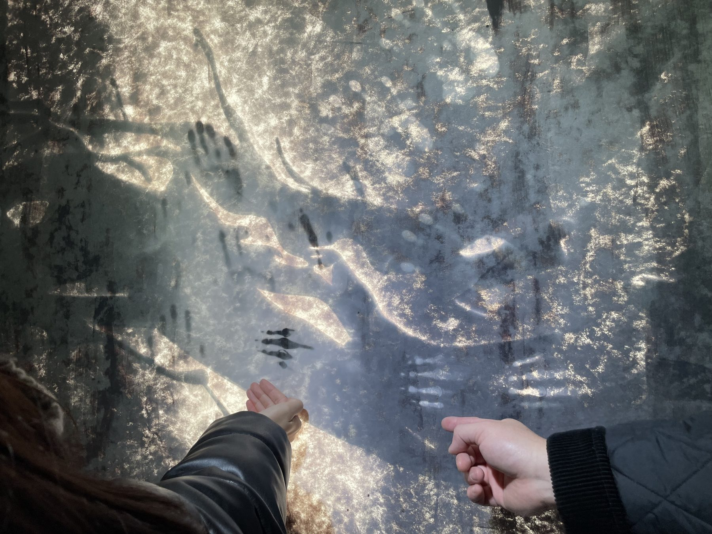
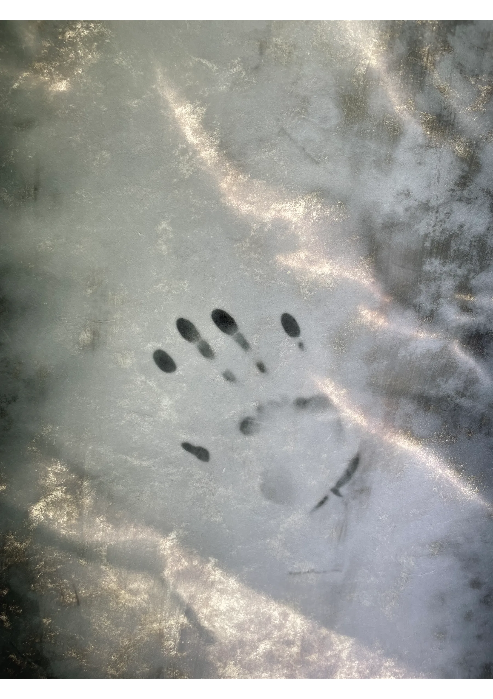

Drawing Archipelagos 3(2023)
Interactive installation, Diamensions Variable
Thermal ink on paper, Sun light, Body Heat, Radiator, Acrylic, Insulator, Aluminium
{kind=link}

“Archipelagos Drawing 3” is a participatory drawing installation which was presented at Euljiro OF in December 2023, as part of the solo exhibition “A Flowing Body Does Not Decay”.
The drawings, made with temperature-responsive ink, were installed on the large window of the room that receives the most sunlight, reflecting the characteristics of the exhibition space. The drawings change in response to the heat of the sun, the viewer's body temperature, and the temperature of the exhibition space's heating system, leaving temporary traces of white in warmer areas and black in colder areas. The viewer is invited to touch through the relatively warm and cold surroundings, exploring the visualized changing temperatures.

The title Archipelagos Drawing 3 is inspired by an excerpt from Michel Serre's Hermes IV.
"In the beginning there was chaos. A tempestuous clamour and shouting, a great disorder outside the so-called system of the world, in all its splendour. In the beginning there was something indivisible. We can call it a cloud. It is a drop of liquid, an atom, a collection of insignificant components whose reactions are unknown, whose boundaries are undefined, like a cloud with fluid or dissolved edges.
Everything is a cloud, without exception. Everything is fluid. Anything is fluid. And if there are things, bodies, messages, meanings, orderly structures, or even systems, even if there are these things, they are only in the form of shoals. These are the Sporades (archipelagos in the Aegean Sea) scattered over an amorphous, vast ocean. Even rational things have gaps. Rationality is a ridge, a top, a peripheral outgrowth, a certain superstructure that rises temporarily from the cloud layer. The world is a peculiar atmospheric phenomenon of such disorder."
Foreword : “A Flowing Body Does Not Decay” - 권태현 (한국어)
Review : “A Flowing Body Does Not Decay” - 정만근 (한국어)
Credits:
Produced with a grant by SFAC
Exhibitions:
<A Flowing Body Does Not Decay>
Euljiro OF
Seoul(kr)
2023
Produced with a grant by SFAC
Exhibitions:
<A Flowing Body Does Not Decay>
Euljiro OF
Seoul(kr)
2023